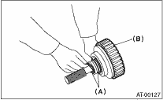
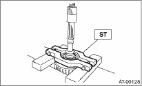
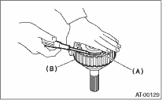
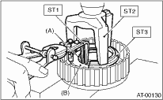
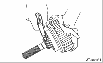

AUTOMATIC TRANSMISSION(4AT) > Transfer Clutch
1. Remove the seal ring.

|
(A) |
Seal ring |
|
(B) |
Rear drive shaft |
2. Remove the ball bearing using the ST and the press.
| ST 498077600 | REMOVER |

3. Use a flat tip screwdriver to remove the snap ring, and then take out the pressure plate, retaining plate, drive plate and driven plate.

|
(A) |
Snap ring |
|
(B) |
Rear drive shaft |
4. Using the ST1, ST2 and ST3, remove the snap ring, then take out the return spring and transfer clutch piston seal.
| ST1 399893600 | PLIERS |
| ST2 398673600 | COMPRESSOR |
| ST3 398623600 | SEAT |

|
(A) |
Snap ring |
|
(B) |
Transfer clutch piston seal |
5. Use an air compressor to blow compressed air from the rear drive shaft to remove the transfer clutch piston.
